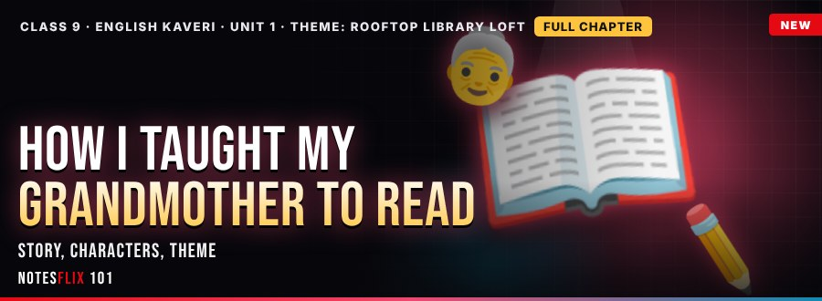
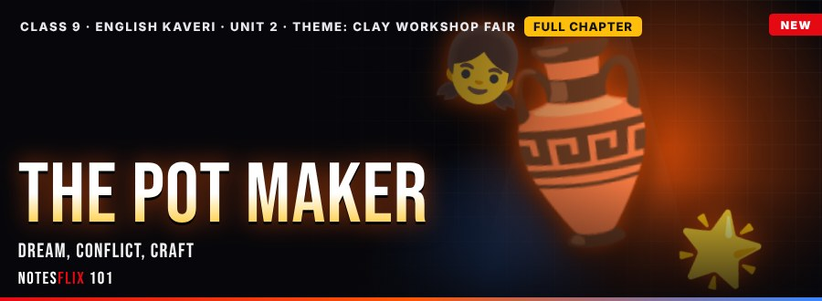
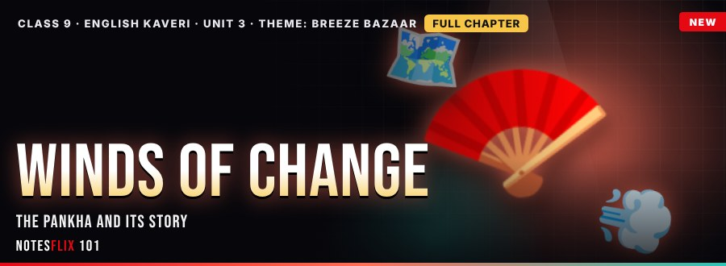
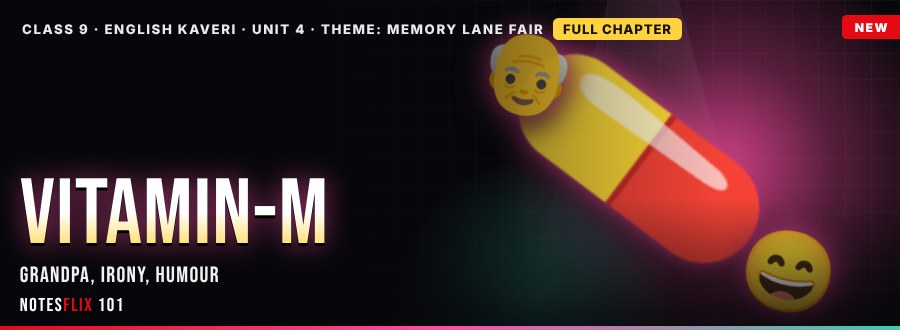
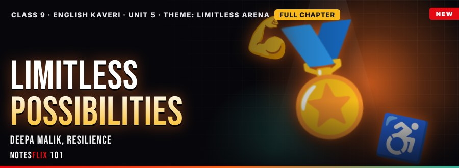
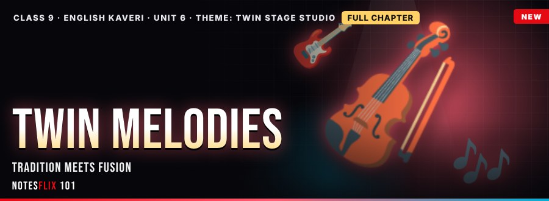
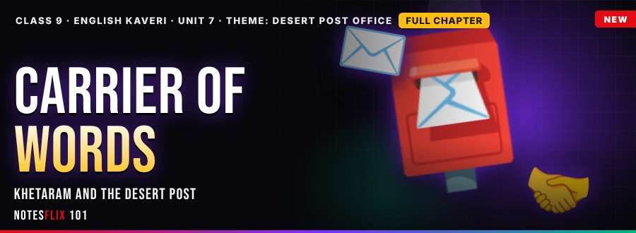
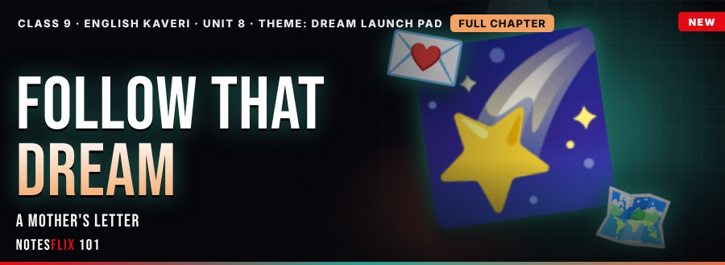

Class 9 English (Kaveri) Notes
Interactive CBSE Class 9 English (Kaveri) notes from Notesflix 101. They follow the new NCERT English textbook Kaveri (2026-27). Each chapter is broken into short parts with easy explanations, picture stories, flash cards, quizzes and board-style exam questions with model answers. 8 of 16 parts are free to read with no password (Part 1 of every chapter). The other parts open with a password from Notesflix 101.
Chapters

Unit 1: How I Taught My Grandmother to Read
A grandmother learns to read at sixty-two, and a young narrator becomes her first teacher.
- Rooftop Library LoftFREE — A village story by Sudha Murty: the narrator, Krishtakka, the serial Kashi Yatre, the lessons, character sketch and theme. (35 min)
- Poem of PraisePASSWORD — Subramania Bharati's ode: refrain, imagery, personification, allusion, tone and mood, plus a descriptive paragraph. (35 min)

Unit 2: The Pot Maker
Sentila dreams of making pots, and learns that craft, patience and guidance carry a tradition forward.
- Clay Workshop FairFREE — A story by Temsula Ao: Sentila, Arenla and Onula, conflict, character, symbol and theme. (35 min)
- Honour Every WorkPASSWORD — The poem Gifts of Grace in free verse, the dignity of labour, and noun clauses, relative clauses and determiners. (35 min)

Unit 3: Winds of Change
The story of the Indian hand fan: its origin, regional variety, and a craft facing a changing world.
- Breeze BazaarFREE — An informative article on the pankha: word origin, Ajanta evidence, regional fans, technology and revival. (35 min)
- Garden GalleryPASSWORD — Maya Anthony's poem: extended metaphor, imagery, AABB rhyme, tone and mood, plus the active and passive voice. (35 min)

Unit 4: Vitamin-M
A funny and warm story about Ravi, his Grandpa and who really needs a memory vitamin.
- Memory Lane FairFREE — Asha Nehemiah's story: Grandpa, Ravi and Vidya, suspense, irony, humour and respect for elders. (35 min)
- Senses of MemoryPASSWORD — Tagore's poem: refrain, sensory imagery, tone and symbolism, plus modals for advice and duty. (35 min)

Unit 5: The World of Limitless Possibilities
An inspiring interview with Dr Deepa Malik on attitude, resilience and ability beyond disability.
- Limitless ArenaFREE — Interview with Dr Deepa Malik: Paralympics, resilience, inclusion and writing a speech. (35 min)
- Nine Gold MedalsPASSWORD — David Roth's narrative poem: empathy, unity, tone and contrast, plus reported speech. (35 min)

Unit 6: Twin Melodies
A play by Mitra Phukan about tradition, fusion and a father and daughter who learn to listen.
- Twin Stage StudioFREE — Mitra Phukan's play: acts, dialogue, conflict between tradition and fusion, and harmony. (35 min)
- Friend in MusicPASSWORD — Bryanna T. Perkins's lyric poem: metaphors of ocean, rhythm and therapy, tone and mood, plus idioms and phrasal verbs. (35 min)

Unit 7: Carrier of Words
The story of Khetaram, a village postman in the Thar desert, and the trust that letters build.
- Desert Post OfficeFREE — Khetaram, a Gramin Dak Sewak in the Thar desert: duties, hardships, trust and dignity of labour. (35 min)
- Words That MatterPASSWORD — Charles Swain's poem on the limits of words: hyperbole, simile, blossoms and weeds, tone and mood. (35 min)

Unit 8: Follow That Dream
Irene Chua's letter from a mother to her daughter about passion, planning and the courage to follow a dream.
- Dream Launch PadFREE — Irene Chua's letter to Ming: passion, planning, sacrifice, support and hurdles, with a letter writing skill. (35 min)
- First Step BridgePASSWORD — Robert Langley's poem: a solitary challenge, the first step, comfort zone, self belief, plus conditionals. (35 min)
Frequently asked questions
Are the Class 9 English (Kaveri) notes free?
8 of 16 parts are free to read with no password (Part 1 of every chapter). The other parts open with a password from Notesflix 101.
Which syllabus do these Class 9 English (Kaveri) notes follow?
They follow the new NCERT English textbook Kaveri (2026-27). Every chapter is split into short interactive parts with simple explanations, flash cards, quizzes and board-style exam questions with model answers.
How many chapters are covered?
8 chapters: How I Taught My Grandmother to Read; The Pot Maker; Winds of Change; Vitamin-M; The World of Limitless Possibilities; Twin Melodies; Carrier of Words; Follow That Dream.
Is there a practice test for Class 9 English (Kaveri)?
Yes. The Class 9 English (Kaveri) Practice Marathon has 433 multiple-choice questions taken from the notes: a weekly marathon (30 questions, 20 minutes, the same set for everyone that week), a 10-question sprint, a 100-question mega marathon and chapter practice. A free sample is open to all; the full bank opens with the subject password.
How do I get the password for locked notes?
Email support@notesflix101.com with your name, class, school and the Gmail ID you sign in with. The same password opens every locked English (Kaveri) note.